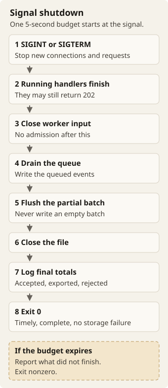

Go · Infrastructure · Build and learn
Build an ingest relay
Receive log events over HTTP and write them to a file. Then make your service handle bursts, write in batches and stop without losing accepted work.
Glossary
This brief uses each term below with one meaning only.
- Event: one JSON object with the four string fields
id,service,levelandmessage. - Event POST: one
POST /eventsrequest. - Read slot: permission to read and validate one request body. The relay has 16 read slots.
- Receive time: the UTC time that the relay assigns to an event while it handles the request, before admission.
- Admission: a handler puts a valid event into the queue. Admission order is the order of these puts.
- Queue: the bounded memory buffer for admitted events that wait for the worker.
-queue-sizesets its capacity. - Worker: the one background worker. It performs all file writes.
- Batch: the events that the worker took from the queue for one write.
- Writer: the code that appends records to the output file.
- Record: one line in the output file. It holds the four event fields and the receive time.
- Flush: write the current batch to the output file in a single write.
- Exported: an event in a batch whose write completed fully without error.
- Overload: events arrive faster than the disk can write them. When the queue is full, the relay rejects new events with
503. - Drain: the worker writes the events that are still in the queue.
- Storage failure: a write error or a short write.
- Pair: the AI assistant that you work with.
The challenge
Imagine a small service that runs beside an application. It receives the application’s logs and appends them to a local file for another process to collect. That service is your ingest relay.
The interesting part starts when events arrive faster than the disk can write them. How much can you keep in memory? When should you reject a request? What happens to accepted events when the process stops? You answer these questions as you build.
Use Go 1.22 or later. Use only the standard library, also for tests. Declare the Go version in go.mod. These topics are outside this challenge:
- Deployment, Kubernetes, authentication and TLS.
- Databases, retries and persistent queues.
- Rotation, crash recovery and throughput tuning.
You do not need to build the downstream collector.
Before you start
Create an empty project. Initialize a module:
go mod init example.com/relayWork with your AI pair through all steps. Ask it to do these things:
- Explain concepts that are new to you.
- Write code with you.
- Help you investigate failures.
Make small changes. Before you run a test, predict what it will do. When the result surprises you, ask why. You do not need an AI transcript or proof of unaided authorship.
The examples assume a main package at the module root. They also assume bash or zsh with curl. If you choose another layout, adjust the build path. When you have a server, build it with go build -o relay .. Run it in one terminal. Send requests from another terminal.
Each step gives a result to aim for. The outputs are examples, not results from an existing implementation. Test names, timings, JSON member order and error wording may differ. Statuses and behavior must match. Use a fresh process and a new output file for each independent example, unless the brief says otherwise.
Optional warm-ups: Go Scratch Exercises.
Build it one step at a time
Do each step with your pair. If you need more time, split the step. Keep the tests from earlier steps when you add behavior. The requirements are here, next to the examples.
Step 1 — Read an event
Start with code that converts JSON into a validated event. You do not need HTTP yet. Use this as your first input:
{"id":"evt-0001","service":"checkout","level":"info","message":"order placed"}What to accept
Require exactly one object with four string fields: id, service, level and message. Reject empty strings and strings that contain only Unicode whitespace. Preserve valid values exactly. The level must be precisely debug, info, warn or error.
Reject these inputs:
- Missing fields or unknown fields.
- Non-string values, including
null. - Malformed JSON.
- Empty input.
- Non-object top-level values.
Allow trailing whitespace. Reject another value or other trailing text. Choose how to handle repeated member names, and document your choice. Event IDs need not be unique. Do not deduplicate them.
Make tests from the input above. Change one thing at a time. For example:
| Change | Result |
|---|---|
| None | Valid event, all four values unchanged |
"message":" order placed " | Valid, surrounding spaces preserved |
"level":"INFO" | Error that identifies the invalid level |
Remove id | Error that identifies the missing field |
| Append another object | Error that identifies trailing data |
Run go test -v ./.... If your tests have names for those cases, part of the output might look like this:
--- PASS: TestValidate/valid
--- PASS: TestValidate/preserve_spaces
--- PASS: TestValidate/invalid_level
--- PASS: TestValidate/missing_id
--- PASS: TestValidate/trailing_data
PASSBefore you continue, cover every validation rule and every accepted edge case. Explain to your pair the difference between malformed JSON and a well-formed event with invalid values.
AI mentor prompt
I am on Step 1, reading an event. Ask me to list the inputs that my validation must reject. Then ask me how malformed JSON differs from a well-formed event with invalid values. Give one hint at a time. Do not edit files. Do not show the solution unless I ask for it.
Step 2 — Put it behind HTTP
Add POST /events and GET /healthz. Support -listen: a non-empty TCP host:port address, default 127.0.0.1:8080. For now, test successful admission with a test double. You connect the actual queue in Step 4.
Handle a request
Check read capacity, body size, validation and admission, in that order. Stop at the first rejection:
- Read capacity. Allow at most 16 requests to read or validate bodies at the same time. If all read slots are in use, return
503immediately. Do not read the body. Do not wait. Release the slot when reading and validation finish, also on error. - Body size. Limit bodies to 16,384 bytes after transfer decoding, and count trailing whitespace. Enforce the limit on the bytes actually read, not only on
Content-Length. You may reject an oversized declared length early. Allow a body of exactly the limit. A larger body gets413, or400if you already detected invalid input within the limit. Never admit an oversized body. - Validation. Invalid events get
400. Do not checkContent-Type. Valid bodies work with any value of this header, and also without it. - Admission. Successful admission gets
202. A full queue or closed admission gets503, without waiting for space. Handlers never write to the file. Handlers never wait for the writer.
Every rejected event POST must explain the problem:
- A
400identifies the field or body error and why it failed. - A
503identifies read capacity, queue capacity or closed admission.
Choose the response formats, including the success body. Document them.
Health returns 200 during normal operation. Choose its body. After shutdown starts or a storage failure occurs, health may return 503 or be unreachable. Other methods on /events return 405. Unknown paths return 404.
Try it
Run ./relay. Then send an invalid event from the other terminal:
curl -sS -w '\n%{http_code}\n' \
--data-binary '{"id":"evt-0001","service":"checkout","level":"INFO","message":"order placed"}' \
http://127.0.0.1:8080/eventsExpected: an explanation and status 400
{"error":"level must be debug, info, warn, or error"}
400Also test these cases:
- Both size boundaries: 16,384 and 16,385 bytes.
- Success.
- Wrong methods.
- Unknown paths.
In a test, hold 16 requests in the middle of their bodies. The next request must get 503. The relay must not read its body.
AI mentor prompt
I am on Step 2, the HTTP handler. Ask me to list the four checks in their order. Then ask me which status each rejection gets. Then ask me how my test holds 16 requests in the middle of their bodies. Give one hint at a time. Do not edit files. Do not show the solution unless I ask for it.
Step 3 — Write a record
Now build the writer independently. Support -out: a non-empty path, default events.jsonl. At startup, open the file in append mode. Create the file if needed. Never truncate or rewrite existing content.
The output format
For each event, write one complete JSON object followed by a newline. Each record has exactly the four original fields plus a receive time that the server assigns. The time must come from the UTC clock while the relay handles the request, before admission. Use an RFC 3339 string that ends in Z. Choose the field name and the precision of the time. Document both.
For a writer test, supply the event from Step 1 and a fixed receive time. With the field name received_at, the appended line should look like this:
{"id":"evt-0001","service":"checkout","level":"info","message":"order placed","received_at":"2026-09-23T10:15:30.123Z"}The real service uses its clock, so real timestamps will differ. JSON member order does not matter. Preserve the string values of the event, even when the encoding escapes characters differently.
Test append behavior:
- Start with a file that has one existing line.
- Write two records.
- Check the result. It should be three complete lines, with the original line unchanged.
- Decode the new lines to check their values.
Make a write fail. Check that the error reaches the caller. You handle it at service level in Step 6.
AI mentor prompt
I am on Step 3, writing a record. Ask me which fields each record has. Then ask me where the receive time comes from. Then ask me how my test proves that the original line stays unchanged. Give one hint at a time. Do not edit files. Do not show the solution unless I ask for it.
Step 4 — Connect the queue
Join the pieces. A handler validates an event, assigns its receive time and admits the event to a bounded queue. Exactly one background worker performs all file writes, in admission order. Concurrent requests need not follow connection arrival order.
Support -queue-size: an integer ≥ 1, default 128. Queue capacity counts the events that wait for the worker. It excludes the current batch of the worker. Start with one event per write. Keep memory bounded by the 16 read slots, the queue and one batch. Do not create per-request background work that outlives the request.

- A handler gets one of the 16 read slots. If no read slot is free, the handler returns
503. - The handler reads the body. A body larger than 16,384 bytes gets
413, or400if the handler already detected invalid input within the limit. - The handler validates the event. An invalid event gets
400. Then the handler assigns the receive time. - The handler admits the event to the queue and returns
202. A full queue or closed admission gets503. - The one worker takes a batch from the queue. In this step, each write has one event. Step 5 adds batches of up to
-batch-sizeevents. - The worker passes the batch to the writer in one write, in admission order.
- The writer appends one record per event to the output file.
See where the events are
Add GET /stats. It returns 200 and a JSON object with at least these integers:
| Field | Meaning |
|---|---|
accepted_total | Event POSTs answered 202 |
rejected_total | Event POSTs answered 400, 413 or 503, each counted once. Other paths and methods never count. |
exported_total | Events in batches whose write completed fully without error. Failed or partial writes count as zero. |
queue_depth | Events that the worker did not take yet. It excludes the current batch, even while the worker writes it. |
Counters start at zero for each process. The relay does not persist them. A statistics request after a client receives its response must reflect that response. The values need not be an atomic snapshot.
Try the whole path
Start a fresh process with ./relay -out step4.jsonl. Send one event:
curl -sS -o /dev/null -w '%{http_code}\n' \
--data-binary '{"id":"evt-0001","service":"checkout","level":"info","message":"order placed"}' \
http://127.0.0.1:8080/eventsExpected
202Run curl -sS http://127.0.0.1:8080/stats. When the write completes, the values should be:
{"accepted_total":1,"rejected_total":0,"exported_total":1,"queue_depth":0}cat step4.jsonl should show one record like the record in Step 3. An immediate stats request can still show pending work. Wait for the write before you compare these values.
For a deterministic overload test, do these steps:
- Use queue capacity 2.
- Wait until the worker is blocked inside its first write.
- Submit two more events.
- Submit a fourth event.
- Expect three
202responses, one503and these statistics:
{"accepted_total":3,"rejected_total":1,"exported_total":0,"queue_depth":2}Release the write. Eventually, exported becomes 3 and queue depth becomes 0. Also check the other rejection counters. Check that 404 and 405 do not change them.
AI mentor prompt
I am on Step 4, connecting the queue. Ask me to trace one event from the handler to the file. Then ask me what the overload test expects, and why. Give one hint at a time. Do not edit files. Do not show the solution unless I ask for it.
Step 5 — Write in batches
Replace one-event writes with batches of at most -batch-size events. This flag is an integer ≥ 1, default 16. Add -flush-interval: a positive Go duration, default 1s. Queue size and batch size are independent.
Flush the batch at these times:
- When the batch fills.
- On each periodic flush opportunity, if the batch is non-empty.
- When worker input ends.
Never write an empty batch. Write each batch to the output file in a single write. A partial batch waits at most about one interval for a flush opportunity. Disk completion time is not guaranteed.
Try it in a controlled test
- Use batch size 3.
- Use a writer that records each call.
- Do not allow a periodic flush yet.
- Feed five events.
- Wait until the worker consumes all five events.
- Trigger one flush opportunity.
| Point in the test | Writes so far | Events in each write |
|---|---|---|
| Five events consumed, before the tick | 1 | 3 |
| After the tick | 2 | 3, 2 |
| Another tick, no new events | 2 | 3, 2 |
Repeat the test, but end the input instead of a tick. The worker must still write the remaining two events. Choose your test design. Do not rely on racing a real timer. Check write counts and contents, not only how many lines eventually appear in a file.
AI mentor prompt
I am on Step 5, writing in batches. Ask me to name the three times when the worker flushes a batch. Then ask me how my test triggers a flush opportunity without a race against a real timer. Give one hint at a time. Do not edit files. Do not show the solution unless I ask for it.
Step 6 — Stop without losing work
Now make the relay safe to stop. Before you connect the shutdown parts, decide with your pair which part waits for which.
Shutdown and failure
On the first SIGINT or SIGTERM, the relay stops in the order below. One five-second budget from the signal covers the whole shutdown.

- Stop new connections and requests.
- Let already-running handlers finish their normal checks and admission. They may return
202. - When they finish, close worker input. No event may be admitted after that.
- Drain the queue.
- Flush the partial batch.
- Close the file.
- Log the final accepted, exported and rejected totals.
- Exit 0 only after timely, complete shutdown without storage failure.
If the budget expires, report what did not finish and exit nonzero. Choose the behavior for a second signal, and document it.
A write error or a short write must immediately stop all admission, including from in-flight handlers. Then do these steps:
- Log the failure.
- Stop the HTTP server.
- Exit nonzero within five seconds of the failure.
An earlier signal-shutdown deadline still applies. You do not need to add retries. Unwritten events may be lost, and the file may end with an incomplete line. Document that limitation.
Every controlled exit after startup logs final accepted, exported and rejected totals. Exit 0 only after timely, complete shutdown without storage failure. A crash or forced kill cannot promise final logs.
Try it
Use an output path that does not exist yet. In terminal 1, run ./relay -out step6.jsonl -batch-size 16 -flush-interval 1h. In terminal 2, send an event:
curl -sS -o /dev/null -w '%{http_code}\n' \
--data-binary '{"id":"evt-0001","service":"checkout","level":"info","message":"order placed"}' \
http://127.0.0.1:8080/eventsWhen it prints 202, press Ctrl+C in terminal 1. Then run this in terminal 1:
echo $?
wc -l < step6.jsonlExpected: successful exit, one stored event
0
1The long interval leaves the event in a partial batch. Shutdown must flush it. The final logs should report accepted 1, exported 1, rejected 0. You choose the log format.
Finish startup checks
An empty, unparseable or out-of-range flag must report the flag name on standard error. The relay must then exit nonzero without serving. A file-open or address-bind failure must report the cause and exit nonzero. Announce readiness only after both succeed. Log the address and the effective configuration, or explain a departure in the README.
For example, ./relay -queue-size 0 should report something like -queue-size must be at least 1 and fail. Also automate tests for these cases:
- Draining a nonempty queue.
- Final flushing.
- Stalled shutdown.
- No admission after input closes.
For write errors and short writes, assert these results:
- Exported totals do not increase.
- The relay reports the failure.
- The relay admits no later event.
Be precise about success
202 means accepted into memory, not persisted. Exported means that a complete successful write handed bytes to the OS. After exit 0, each accepted event appears exactly once, in admission order, after earlier file content. This rule applies per admission, not per unique ID.
You do not need to call fsync. Power loss, crashes, out-of-memory kills and SIGKILL may lose data. After a failed write, the counters show the gap in fully successful writes. They do not show the exact number of intact records on disk.
AI mentor prompt
I am on Step 6, shutdown and failure. Ask me to list the shutdown order from the signal to the closed file. Then ask me what changes after a write error or a short write. Give one hint at a time. Do not edit files. Do not show the solution unless I ask for it.
Step 7 — Finish something you can explain
You now have the complete relay. Run your checks from a fresh copy:
go build ./...
go vet ./...
go test -race ./...Expected: build and vet succeed silently. The test command reports success.
ok example.com/relay 1.024sThe package name, timing and number of lines depend on your layout. Format the code with gofmt. Tests must also pass with plain go test ./... and on repeated runs. Use observable conditions, not fixed sleeps. Avoid depending on a particular port being free.
Keep the result runnable
Provide source, go.mod, tests and a README in a repository or archive. Exclude binaries and event output files.
Include these items in the README:
- Run and test commands.
- The path of an event.
- Ownership of shared state and of the file.
- Shutdown order.
- Documented choices, guarantees and limitations.
- Unfinished work.
- One unfamiliar concept that you investigated.
Review these qualities: correctness, bounded and race-free concurrency, meaningful tests and clarity. Do these things with your pair:
- Trace an event.
- Explain what happens under overload.
- Predict the effect of a changed limit.
If you cannot explain part of the code yet, explore it next with your pair.
AI mentor prompt
I am on Step 7, the final review. Ask me to trace one event through my relay. Then ask me to explain what happens under overload. Then ask me to predict the effect of a changed limit. Give one hint at a time. Do not edit files. Do not show the solution unless I ask for it.